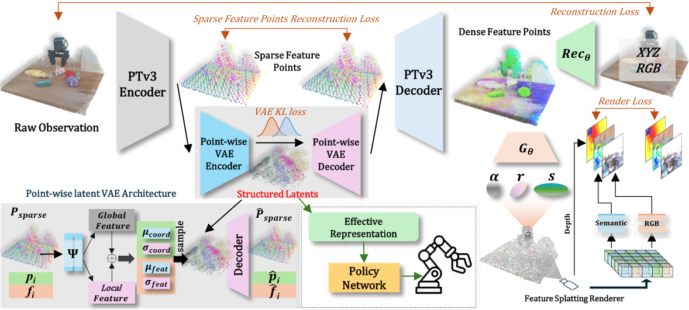
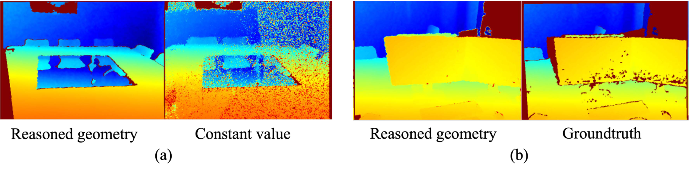
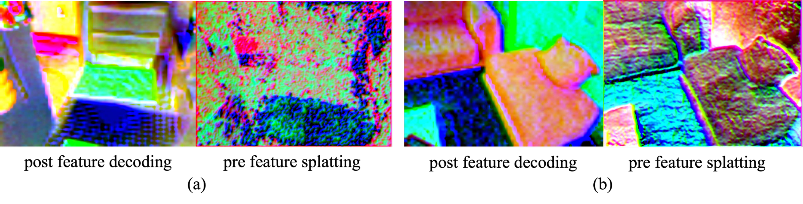
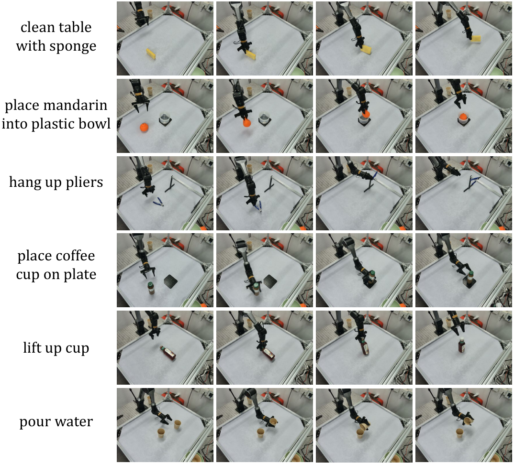

Paper Reading · Robotics World Models
Structural Latent Points：把点云压成可泛化的结构潜点
这篇不是做一个新 policy，也不是直接把 3DGS splats 当机器人状态用。它真正想解决的是： 机器人视觉预训练里，纯 implicit 表征缺结构，纯 explicit 点/高斯又受分辨率和域偏移限制。 作者在 PTv3 的点云 autoencoder latent 中插入 point-wise VAE，把点的坐标和特征一起正则到高斯先验， 得到一种“还像点云、但不再执着于精确几何”的结构潜点。
0. 一句话结论
痛点：机器人操作需要 3D-aware visual representation，但 NeRF/volume latent 太隐式、太贵， 3DGS/point splat 太显式、受点数/分辨率限制，迁移到分布不同的下游场景会掉。 核心招：在 PTv3 点云 autoencoder 的 sparse latent points 上插入 point-wise latent VAE， 同时对每个点的 feature 和 coordinate 建高斯后验，再用轻量 3DGS feature splatting 做自监督预训练。 效果：RLBench 平均成功率 0.56、ManiSkill2 0.64，均为表内最好；真机三项任务总体也优于 scratch/pretrained baselines。 代价：它牺牲了精确几何，依赖 RGB-D/point-cloud 输入、ScanNetV2 预训练和未公开代码；在需要毫米级几何的操作上上限可能受限。
- 不是
- 不是一个新的 robot policy；下游 policy 仍用 ACT。也不是把完整 3DGS 场景当 policy state。
- 是
- 一个 3D 表征预训练框架：用结构潜点作为紧凑、平滑、可迁移的 observation representation。
- 核心 insight
- 操作策略不一定需要精确重建所有几何细节；更有用的是稳定携带粗结构、语义边界和可泛化几何趋势的 latent point set。
1. 论文定位
任务范式是 3D-aware visual representation pretraining for robotic manipulation。 训练阶段用多视角/RGB-D/点云和可微渲染监督学一个视觉 encoder；下游阶段把 encoder 输出接到 ACT policy， 在 RLBench、ManiSkill2 和真机任务里看 success rate。
| 路线 | 表征形态 | 瓶颈 | 这篇的差异 |
|---|---|---|---|
| 2D pretrained encoder | image tokens / ViT features | 语义强，但缺 3D 几何和可操作空间关系 | 直接从点云/RGB-D 学 3D latent points |
| NeRF / neural volume pretraining | implicit feature field | 表达强，但结构不可解释，ray casting 慢 | 不用重型 volume renderer，而用轻量 3DGS feature splatting |
| 3DGS / explicit point splats | explicit Gaussian primitives / feature points | 几何清楚，但点数和分辨率限制表示容量 | 把 sparse feature points 变成概率正则的 structural latent points |
| 直接点云 backbone | PTv3 / SpUNet features | 能吃点云，但 latent manifold 对域偏移敏感 | PL-VAE 让 feature+coordinate 同时靠近 Gaussian prior，提升平滑性和泛化 |
它和主流 baseline 的关键差异是：作者不把 3DGS 的显式几何本身作为最终 policy state， 而是把 3DGS 当预训练监督工具；真正送给 policy 的是 PL-VAE 采样后的 \(\mathbf{z}_{vae}\)。
2. 方法总览
Pipeline 可以拆成两层。第一层是点云 autoencoder + PL-VAE，负责把 raw point cloud 压成结构潜点。 第二层是轻量 3DGS 渲染监督，负责把 latent 学成有 3D 意义的特征，而不是纯 autoencoding。

P_raw: raw point cloud, N x (xyz + rgb)
-> PTv3_enc
P_sparse: sparse feature points, M x (p_i, f_i)
-> PL-VAE encoder: local/global descriptors -> Gaussian params
z_vae = {(z_i^p, z_i^f)}_{i=1..M}
-> PL-VAE decoder
P_sparse_hat
-> PTv3_dec
P_dense
-> G_theta predicts Gaussian properties
-> 3DGS feature splatting under each camera v
F_hat_v, D_hat_v
-> H_c / H_s post decoders
I_hat_v, F_hat_v^s
-> render + recon + VAE + KL losses
Downstream:
z_vae + robot proprioception O_agent -> ACT policy -> action chunk关键符号：\(\mathbf{P}_{raw}\) 是原始点云；\(\mathbf{P}_{sparse}\) 是 PTv3 encoder 的稀疏 latent point cloud； \(\mathbf{z}_{vae}\) 是真正给下游 policy 用的 structural latent points； \(G_\theta\) 预测每个点对应的 3D Gaussian 属性；\(R_v\) 是第 \(v\) 个相机视角下的 feature/depth splatting renderer。
3. 关键创新点
创新点 1：Point-wise latent VAE，不是 global VAE
旧方法为什么不行：传统 point-cloud VAE 往往压出全局 latent，适合生成/重建形状，但对机器人操作来说， 下游 policy 需要知道“哪些局部结构在哪里”。单个全局向量会丢掉可操作的空间索引。
它怎么改：PL-VAE 对每个 sparse point 同时建 feature posterior 和 coordinate posterior： \((\mu_i^f,\sigma_i^f)\) 控制点特征，\((\mu_i^p,\sigma_i^p)\) 控制点位置。 这意味着 latent 仍然是一个 point set，但每个点不再是精确几何坐标，而是被 Gaussian prior 平滑后的结构代理。
为什么有效：机器人策略不需要每个点都精确贴合表面，它更需要稳定的 affordance、边界、粗形状和相对空间关系。 Gaussian regularization 会降低噪声、缺失点、视角变化对 latent 的影响。
代价/限制：采样和平滑会损失精确几何。论文 discussion 也指出，穿针、手术等极高精度操作可能受限。
创新点 2：把 3DGS 当监督桥，不把 renderer 做重
旧方法为什么不行：SPA 这类 neural rendering pretraining 可以学 3D-aware representation， 但如果 renderer 太强，它可能自己承担重建任务，前端表征未必学到最有用的信息；同时训练成本很高。
它怎么改：这里只保留 geometry reasoning、feature splatting、post feature decoding 和点/颜色重建。 Renderer 只 splat features 和 depth，不把 color splatting 做成主要路径。
为什么有效：这样强迫前端 structural latent module 学可迁移的 3D features， 而不是让后端渲染器靠复杂结构把图像“补出来”。Feature-only splatting 也让监督更聚焦 representation quality。
代价/限制：它不是为 photo-realistic rendering 设计的；如果目标是高保真视觉合成，这个简化 renderer 不够。
创新点 3：feature + coordinate 双重 KL
旧方法为什么不行：只正则 feature，不正则 point coordinate，可能仍然让下游落在稀疏、尖锐、对分布变化敏感的几何 manifold 上。 只正则坐标，又会削弱语义特征。
它怎么改：对 \((\mu_i^f,\sigma_i^f)\) 和 \((\mu_i^p,\sigma_i^p)\) 分别做 KL 到标准高斯， 再用 L1 重建 sparse point 的坐标和特征。
为什么有效：坐标维保留粗结构趋势，feature 维保留语义/局部上下文；两个空间共同平滑，才像“结构潜点”而不是普通 point features。
实现细节：论文里 feature reconstruction 权重 \(\omega_2=0.1\)，coordinate 权重 \(\omega_1=1\)，因为两者统计尺度不同。
创新点 4：预训练目标从重建逐步转向渲染对齐
旧方法为什么不行：训练早期如果直接靠渲染 loss，splatted features 还没形成，梯度间接且不稳。
它怎么改：总 loss 里有一个 annealing weight \(w(t)\)：开始更重视 reconstruction， 后面逐步降低到 0.1，让 rendering alignment 成为主监督。
为什么有效：先让 latent 学会基本几何/颜色锚点，再让多视角渲染监督塑造 3D-aware feature。 这相当于给 latent manifold 一个 warm start。
4. 训练和推理流程
这篇有两个阶段：表征预训练和下游 imitation learning。预训练不需要动作标签；下游策略训练才需要 demo action。
| 阶段 | 输入 | 输出 | 目标 |
|---|---|---|---|
| Pretraining | ScanNetV2 RGB-D / point cloud / multi-view camera | PTv3 + PL-VAE encoder | render loss + point/color recon + VAE recon + KL |
| Downstream policy training | RGB-D observation -> point cloud, proprioception, action demos | ACT policy | behavior cloning / action chunk prediction |
| Inference | 当前 RGB-D/point cloud + robot state | action chunk | 直接执行 policy，不需要渲染器参与 |
下游公式很直接：\(\hat{a}=\pi(\mathbf{z}_{vae}, O_{agent})\)。 也就是说，训练时 3DGS renderer 是 teacher；推理时 policy 只看 structural latent points 和机器人本体状态。
5. 公式逐行讲解
5.1 NeRF-style 与 3DGS-style 预训练抽象
\(\Psi_e\) 把多视角图像编码成隐式 3D feature volume；\(R_{\mathrm{ray}}\) 按相机 \(T_k\) ray casting； \(\Psi_d\) 解码成第 \(k\) 个视角的图像。问题是 volume 结构隐式、ray casting 成本高。
3DGS-style 先用 \(\Phi_e\) 提图像特征，再用 \(\pi_k\) 根据相机反投影到 3D， \(\Phi_p\) 预测 splat 属性，\(R_{\mathrm{rast}}\) rasterize。它更快，但 explicit point-like representation 容易受 resolution 限制。
5.2 主干表征
\(\mathbf{P}_{raw}\) 是原始点云；PTv3 encoder 降采样成 sparse feature points。 与普通 PTv3 autoencoder 不同，\(\mathbf{P}_{sparse}\) 不直接进 decoder，中间先过 PL-VAE。
5.3 PL-VAE encoder
\(\Psi\) 是 PointNet backbone；\(\mathrm{Agg}\) 是 attention pooling，用来拿全局上下文； \(f_i\) 是局部点特征；\(h_i\) 把全局场景和局部点拼起来。两个 MLP head 分别预测 feature latent 和 coordinate latent 的高斯参数。
5.4 Feature splatting 与 post decoding
\(G_\theta\) 预测 Gaussian 的几何属性；\(R_v\) 对第 \(v\) 个视角渲染 feature map 和 depth。 \(H_c\) 把 splatted feature 解成 RGB，\(H_s\) 解成语义特征图。论文说语义 map ground truth 来自 E-RADIO。
5.5 总损失
论文给定 \(\beta_1=1,\beta_2=0.2,\beta_3=0.1\)，\(w(t)\) 从 1 衰减到 0.1。 \(L_{recon}\) 让 dense features 回归原始点坐标和颜色；\(L_{vae}\) 重建 sparse point 的坐标和特征； \(L_{KL}\) 把 feature/coordinate posterior 拉向标准高斯。
【不确定】论文的 KL 公式在 PDF/TeX 里写法略简略，目标 prior 只写成 \(\mathcal{N}\)。 最合理解释是标准正态 \(\mathcal{N}(0,I)\)。验证方式：等代码公开后看 KL 实现；或者复现时按 VAE 标准 KL 写法检查数值稳定性。
6. 训练-推理对齐
这里最大的 mismatch 是：预训练阶段靠多视角 rendering loss 学 representation， 但下游推理阶段不再渲染，只用 \(\mathbf{z}_{vae}\) 进 ACT。这个设计本身合理，因为 renderer 是监督工具， 但也意味着如果 downstream observation 的点云质量、相机配置、深度噪声和 ScanNetV2 差距太大，\(\mathbf{z}_{vae}\) 可能仍会偏移。
| 对齐点 | 论文处理 | 风险 |
|---|---|---|
| 预训练数据 vs 操作场景 | ScanNetV2 预训练，RLBench/ManiSkill2/真机迁移 | 室内扫描数据和桌面操作对象仍有 domain gap |
| 训练监督 vs 推理输入 | 训练用 RGB/depth/semantic/rendering，推理只用 latent | 如果 latent 没学到动作相关 affordance，渲染好不等于操作好 |
| PL-VAE sampling | 高斯正则提升平滑性 | 随机采样可能引入不稳定；论文没细说 inference 是否用均值 |
| Renderer capacity | 刻意保持轻量，避免后端替前端学习 | 如果 renderer 太弱，可能监督不足；如果太强，又掩盖 encoder 问题 |
【不确定】推理时 \(\mathbf{z}_{vae}\) 是采样 \(z=\mu+\sigma\epsilon\) 还是直接用 \(\mu\)。 合理猜测：评测时为了稳定通常用均值；训练时用 reparameterization sampling。 验证方式：等代码公开，检查 encoder forward 的 eval mode 分支。
7. 实验复盘
论文在 RLBench、ManiSkill2 和真机平台上评测，统一采用 ACT policy。作者声明所有 baselines 都在同一 ScanNetV2 数据上预训练后再下游评测。 对比方法包括 MultiViT、PTv3、SpUNet scratch，以及 VC-1、MultiMAE、PonderV2、GSRL、SPA、Lift3D 等 3D-aware/视觉预训练 baseline。
| Benchmark | 最好结果 | 关键对比 | 解读 |
|---|---|---|---|
| RLBench, 9 tasks | Ours Mean S.R. 0.56, Mean Rank 1.50 | Lift3D 0.50, No.VAE 0.49, PonderV2 0.42 | PL-VAE 带来明显增益；点/3D-aware 方法整体强于纯 image pipeline |
| ManiSkill2, 6 tasks | Ours Mean S.R. 0.64, Mean Rank 1.33 | Lift3D 0.63, No.VAE 0.59, PonderV2 0.53 | 提升更接近，但 mean rank 仍最好；Hang/Fill 上 Lift3D 接近或更强 |
| Reasoned geometry ablation | CloseJar 0.48 vs 0.24; StackCube 0.36 vs 0.28 | No Reasoned Geo. 固定 opacity/scale/rotation | 几何属性预测对干净 depth/边界有用 |
| Training complexity | Ours: 1 x A800, 400 epochs, ~166 GPU hours | SPA: 80 x A100, ~4000 GPU hours; PonderV2: 8 x A100, ~768 GPU hours | 轻量 renderer 和 PTv3/PL-VAE 前端确实更可复现 |
| Real robot | place mandarin 84; lift bottle 68; place starbucks 36 | PointNet/PonderV2/Ours scratch | 前两项优势明显；starbucks 与 PointNet 打平，不应过度解读为全面碾压 |



批判地看，实验说服力主要来自一致的 simulation benchmark 和复杂度对比。弱点是代码未公开、ScanNetV2 预训练细节不够细、 真机任务数量和 rollout 数较少，而且 real-robot 第三项只与 PointNet 打平。
8. 可复现清单
论文没有给官方代码链接，arXiv 页面也没有项目页；我只找到了 TeX source 和图。复现时最需要补齐下面这些工程细节。
- ScanNetV2 预处理：RGB-D 对齐、点云采样数量、坐标归一化、颜色归一化、multi-view 选择策略。
- PTv3 encoder/decoder 配置：block 数、通道数、stride/downsample ratio、sparse point 数 \(M\)。
- PL-VAE：PointNet \(\Psi\)、attention pooling、\(\phi_f/\phi_p\) hidden dims、latent dims、训练时 KL 权重是否额外缩放。
- 推理：用 posterior mean 还是 sampling；是否固定 random seed；是否对 latent 做 normalization。
- 3DGS geometry head：opacity/scale/rotation 参数化方式、scale clamp、quaternion normalization。
- Feature splatting renderer：rasterizer 实现、相机模型、depth normalization、visibility/alpha compositing。
- E-RADIO semantic feature：使用哪层 feature、是否 frozen、特征维度、是否 PCA/normalize。
- Loss schedule：\(w(t)\) 从 1 到 0.1 的衰减曲线、optimizer、batch size、训练 steps。
- OBSBench/ACT 下游：demo 数、action chunk length、policy hidden size、训练 epochs、evaluation seeds。
- 真机：RGB-D 外参标定、点云裁剪范围、桌面坐标系、动作频率、成功判定标准。
9. 对 FastWAM / 具身操作的启发
这篇对 FastWAM 的启发很直接：如果你要做 world/action model，不一定要把 observation 表征设计成完整 scene reconstruction。 一个更实用的做法是学习 structural observation tokens：它们保留对象粗结构、相对位置、可操作区域和语义边界， 但不追求每个表面点的精确几何。
| 改动点 | 预期收益 | 风险 | 验证实验 |
|---|---|---|---|
| 把 RGB-D/point cloud 编成 structural latent points，再喂 FastWAM | 降低 pixel prediction 负担，提高几何泛化 | 丢精细接触几何 | 比较 pixel latent、point latent、structural point latent 的 action prediction error |
| 动作-conditioned dynamics 预测 \(\Delta z_{vae}\) | 世界模型直接在结构空间 rollout | PL-VAE latent 未必 Markov | 预测下一步 latent 后，用 probing head 测对象位姿/接触变化 |
| 把 PL-VAE 的 coordinate posterior 当 uncertainty | 让 policy 知道哪些区域几何不确定 | posterior variance 不一定校准 | 遮挡/视角扰动下测 variance 与 policy failure correlation |
| 训练时保留 feature splatting auxiliary loss | 让 latent 不退化成动作捷径 | 训练成本上升 | 去掉/保留 render auxiliary，对比 long-horizon generalization |
10. 速读备忘卡
- 核心不是 3DGS，而是 PL-VAE regularized structural latent points。
- 它要折中 implicit expressiveness 和 explicit structure。
- 输入是点云/RGB-D，主干是 PTv3 encoder/decoder。
- PL-VAE 同时建模 point feature 和 coordinate 的 Gaussian posterior。
- \(\mathbf{z}_{vae}\) 是下游 policy 真正使用的 representation。
- 3DGS renderer 只作为预训练监督桥，推理时不用。
- Feature-only splatting 比把 color 直接 splat 更贴近 representation learning。
- 总 loss = render + recon + VAE recon + KL，且 reconstruction 权重从 1 衰减到 0.1。
- RLBench mean S.R. 0.56，ManiSkill2 mean S.R. 0.64，均为表内最好。
- 最大复现风险：官方代码未公开、预处理和模型配置缺细节。
- 对 WAM 的可迁移点：用结构潜点做 observation token，而不是预测完整像素或精确 mesh。
Sources
- arXiv abstract: Learning Structural Latent Points for Efficient Visual Representations in Robotic Manipulation
- Paper PDF v1
- arXiv TeX source and figures
【不确定】截至写作时，我没有找到官方 GitHub/project page。搜索结果只显示作者主页条目和 arXiv 入口， 因此本文没有代码级文件分析；若后续代码公开，应补一节 implementation notes。